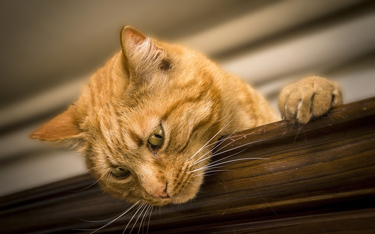

Using Images
Background Image (Cover)
Experiment with background-size: try classes .bg-cover, .bg-contain, or .bg-auto.
Image Map
Click on different areas of the workplace image below:

Computer Section
Modern computers are essential tools for productivity in today's workplace. They enable us to create, communicate, and collaborate effectively.
← Back to Image MapAccessories Section
Workplace accessories like keyboards, mice, and monitors enhance our computing experience and improve ergonomics.
← Back to Image MapDecor Section
A well-decorated workspace can boost creativity and productivity. Personal touches make the environment more comfortable and inspiring.
← Back to Image MapPhone Section
Office phones and mobile devices are vital for quick communication, conferencing, and daily coordination. A reliable phone setup helps teams stay connected and responsive.
← Back to Image MapCoffee Section
A warm mug of coffee (or tea) fuels focus and creates a welcoming atmosphere. Breaks with a beverage can improve productivity and mental clarity throughout the day.
← Back to Image MapFloat Left
Dogs are incredible companions that bring joy and happiness to our lives. Their playful nature and unconditional love make them perfect pets. The image floats left so this paragraph wraps alongside it on wider screens.

The bond between humans and dogs goes back thousands of years, making them one of our oldest and most trusted animal friends.
Float Right
Cats bring calm and curiosity. Here the first paragraph precedes the image so text can wrap on the other side when space allows.
Their independent nature and graceful movement make them fascinating companions.
Picture Tag

Nature's beauty changes with the seasons, and trees are perfect examples of this natural transformation.
Workplace Gear Image Map
Use the hotspots to jump to each gear description. All areas are keyboard accessible; press Tab to move through them.
Fallback Links
Laptop
The central workstation for productivity—managing code, documents, design, and collaboration tools in one portable machine.
Back to Gear MapHeadphones
Noise-isolating headphones help maintain focus in busy or shared environments while improving audio clarity for calls.
Back to Gear MapKeyboard
A responsive keyboard enables faster typing and ergonomic comfort during long work sessions.
Back to Gear MapMouse
A precise pointing device allows smoother navigation and reduces strain versus trackpads for design or data work.
Back to Gear MapJournal
A physical notebook or journal provides a tactile way to capture ideas, sketches, and thoughts away from digital screens. Many professionals find handwriting helps with memory retention and creative thinking.
Back to Gear MapLinked Image

Click the image to learn about Aurora on Wikipedia.
Image As Link
This workplace image links to an external educational resource (opens in a new tab).